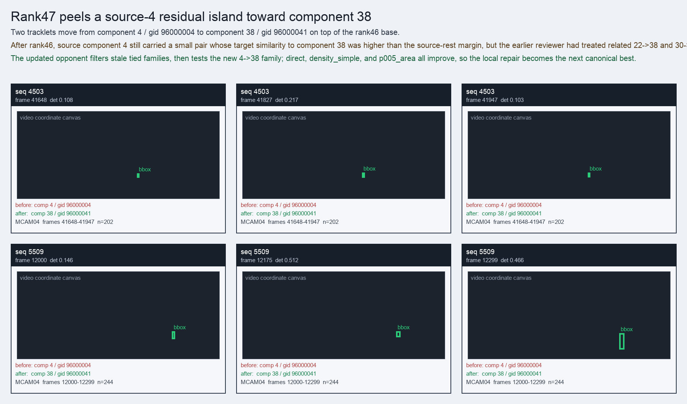

Rank47 peels a source-4 residual island toward component 38
Two tracklets move from component 4 / gid 96000004 to component 38 / gid 96000041 on top of the rank46 base.
Before
component 4, gid 96000004, component_size 195
component 4, gid 96000004, component_size 195
After
component 38, gid 96000041, component_size 43, decision_status subpart_reassign
component 38, gid 96000041, component_size 43, decision_status subpart_reassign
Evidence
target_sim=0.5547, target_margin=-0.0982, source_rest_margin=0.1920
target_sim=0.5547, target_margin=-0.0982, source_rest_margin=0.1920
Failure and fix
Old failure: After rank46, source component 4 still carried a small pair whose target similarity to component 38 was higher than the source-rest margin, but the earlier reviewer had treated related 22->38 and 30->85 moves as hard-neutral ties.
New implementation: The updated opponent filters stale tied families, then tests the new 4->38 family; direct, density_simple, and p005_area all improve, so the local repair becomes the next canonical best.
BBox evidence

Moved tracklets
| seq | video | gid | component | frames | dets |
|---|---|---|---|---|---|
| 4503 | vlincs_MS01_MC0001_MCAM04_2024-03-Tc6 | 96000004 -> 96000041 | 4 -> 38 | 41648-41947 | 202 |
| 5509 | vlincs_MS01_MC0001_MCAM04_2024-03-Tc6 | 96000004 -> 96000041 | 4 -> 38 | 12000-12299 | 244 |